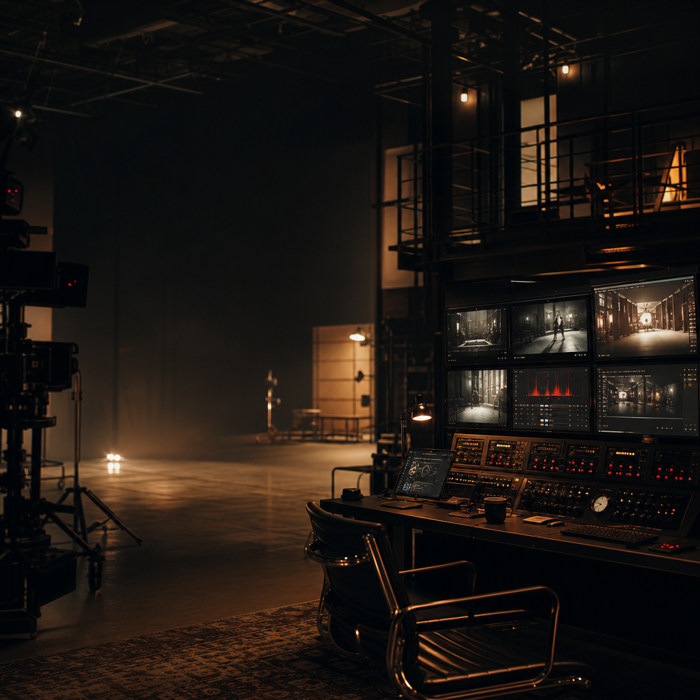

Frontend
Upload video, prompt, mask

Java + AutoDL Video Editing
面向课堂演示的交互式视频编辑系统：上传视频、框选 mask、提交 prompt，由 Java 后端编排 AutoDL 算法模块生成结果。
Interactive Studio
Java Service
Upload video, prompt, mask
Validate multipart request
Save files and track status
Run edit.py pipeline
Preview and download video
Task Output